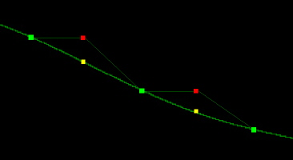
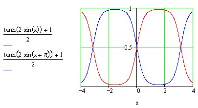

| Columns
Processing Features Departments |
Pitch and Time ScalingHans Mikelson ptscale.orc ptscale.sco limit.wav (398K) Introduction This article describes one of the techniques used for pitch and time scaling. Pitch and time scaling is sometimes called pitch shifting and time stretching. Pitch scaling refers to raising or lowering the pitch of a sample and time scaling refers to changing the duration of a sample without effecting the pitch. We shall see that these are two closely related processes. The technique presented in this article is in some ways similar to granular synthesis and is sometimes referred to as the granular approach to pitch shifting. It is also called the synchronized overlap and add or SOLA method. I will start out by describing some naive approaches to pitch and time scaling and then develop these into more sophisticated methods. Changing the pitch by octaves A naive approach to pitch scaling would involve resampling. To raise the pitch one could discard every other sample. This would effectively double the pitch of the sample while cutting the playing time in half. To lower the pitch one could double each sample or create a duplicate sample. This would lower the pitch by an octave while doubling the playing time of the sample. One of the main limitations to this approach is that the pitch could only be changed by factors of two or by octaves. Resampling The first step towards true pitch shifting is to interpolate between the samples. Consider the case where we were lowering the pitch by an octave. Rather than just doubling the number of samples it would have been better to calculate a value for the sample that was half way between the two samples on either side of it. This can be done by imagining the samples are connected by a straight or curved line. By interpolating between samples it is possible to resample the pitch at any frequency. The value of a line or curve joining the samples is calculated to determine the value of the new sample. Csound currently has the capability for both linear and cubic interpolation.  Figure 1. The yellow dots represent interpolating between samples. The red dots represent simple doubling of each sample. Time stretching Now I will discuss time scaling. One silly way to make a sample twice as long would be to just play it through twice. The pitch would be the same but the duration would be twice as long. Of course this would not result in acceptable time scaling for most samples but it does provide the basis for how it can be accomplished. Suppose we take two samples as above but instead of putting them end to end we chop them up into little mini-samples. Then take the first mini-sample from sample 1 and place the first mini-sample from the identical sample 2 after it. Next place the second mini-sample from sample 1 and then the second mini-sample for sample 2. Repeat this until all of both samples have been used up. We now have a sample that is twice as long as the original. If the mini-samples are small enough (10-50 msec.) then it sounds as if the duration of the samples have been doubled without changing the pitch. To shorten a sample we could just throw away every other minisample. Granulation Unfortunately when we chopped up the samples into minisamples we introduced a large amount of noise into the signal. Unless we were very careful in mincing our sample there would have been many times when the end of one sample did not line up with the beginning of the next sample. This introduces a discontinuity or miniature click. We have learned in earlier articles how to declick something using envelopes. Declicking is done by rapidly fading out one sample and rapidly fading in the next one. The next step is to apply a mini-envelope to each of the mini-samples. The shape of a sine wave makes a nice envelope for this. Dual streaming Our problems are not over yet because in declicking the sound there are now gaps between where one sample fades out and the other sample fades in. This results in a very garbled sound which is fun, but not what we are after at the moment. The solution to this problem is to have two identical streams of minisamples. When one sample fades out another one fades in. That way there are no longer any gaps between the samples. It would also be nice if the envelopes were flat in the middle section. A sine wave shaped by hyperbolic tangent provides a very nice shape for an envelope.  Figure 2. The envelopes for the two sample streams. Putting it all together Everything is now in place to accomplish true pitch and time scaling. For pitch scaling first resample then stretch or shrink the resampled signal until it is back to its original size. The following Csound code accomplishes this aphas1 phasor ifph aphas2 phasor ifph, .5 apos linseg 0, idur, idur/itstr*sr ashft1 table3 iaph*aphas1+apos, itab ashft2 table3 iaph*aphas2+apos, itab Two phasors are generated to sweep the sample table. The variable apos is an offset that moves through the table from sample zero to the sample corresponding to the duration of the note divided by the time scaling factor. The variable iaph is the amplitude of the phasor in samples. This is the size of the sample segment described above. The variable itstr is the time scaling factor. The frequency of the phasors took me a bit of trial and error before I came up with the following relationship ipval = (ipshft-1) ifph = sr/iaph*((itstr-1)/itstr + ipval) This seems to work, causing the frequency to double if ipshift is two and the frequency to be halved if ipshift is one half. The declick envelopes are generated using two sinusoidal oscil's 180 degrees out of phase with each other. These are shaped with tanh and adjusted so they range approximately from zero to one. kdclk1 oscil 1, ifph, 1 kdclk2 oscil 1, ifph, 1, .5 kdclk1 = (tanh(kdclk1*ismth)+1)*.5 kdclk2 = (tanh(kdclk2*ismth)+1)*.5 Finally the two signals are shaped by the envelopes and combined into a single signal aout = ashft1*kdclk1 + ashft2*kdclk2 Limitations This method has some limitations. Two artifacts I notice immediately are some uneven sound when the frequency is scaled up and some chorusing in the sound perhaps due to overlap of the signals. There are some problems with this general method of pitch shifting. For one thing when a person sings at different pitches the formants do not change in pitch very much, only the fundamental frequency changes in pitch. When a sample of a voice is pitch scaled with this technique the formants are pitch scaled too. This results in the effect sometimes called munchkinization or chipmunk voice which is an unnatural sounding high voice. This type of pitch scaling tends to sound better when lowering the pitch compared to raising the pitch. Links http://www.dspdimension.com/ by Stephen M. Sprenger. An excellent collection of articles on pitch and time scaling. http://www.cs.ust.hk/~rren/sound_tech/TSM_Paper_Long.htm An Edge Detection Method for Time Scale Modification of Acoustic Signals REN, Rui. A paper on pitch and time scaling. |